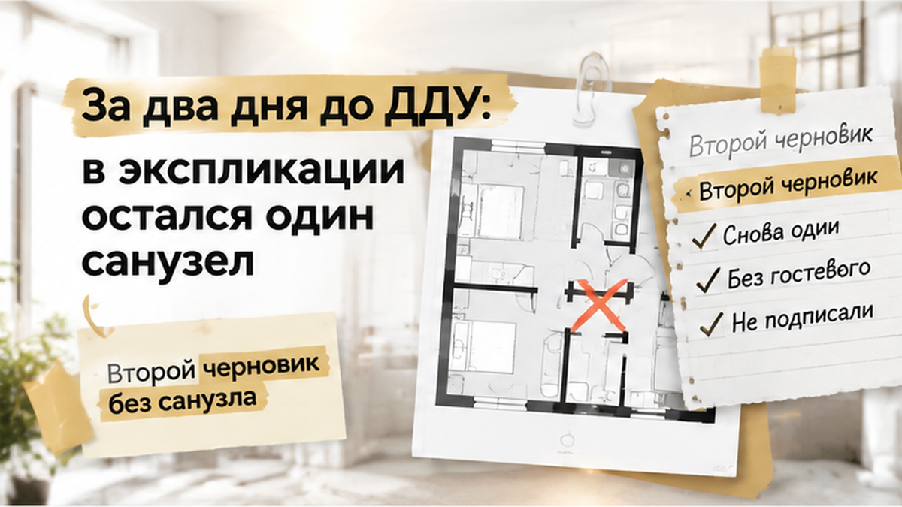
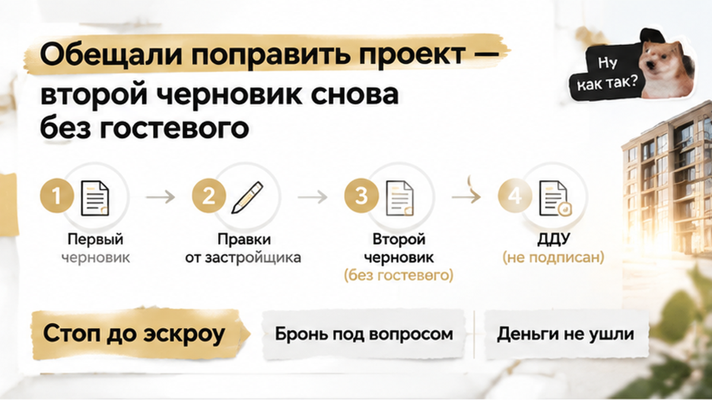

За два дня до подписания ДДУ семья обнаружила: в квартире, которую выбирали с двумя санузлами, в экспликации остался только один — при этом около 55 тысяч рублей уже ушли за бронь. Ипотеку считали под конкретную площадь и планировку, а квартиру мысленно уже заселяли детьми, мебелью и утренними очередями в ванной. В шоу-руме всё выглядело именно так, как нужно семье: основной санузел и отдельный гостевой. Но перед сделкой картинка на экране разошлась с приложением к договору, и покупатели остановились до того, как деньги попали на эскроу.
Я Святослав Шакин, The Риэлтор, Тюмень. Если покупаете новостройку, подписывайтесь в Telegram и MAX — разбираем документы, где планировка расходится с ДДУ.
Семья пришла выбирать не просто квадратные метры. Им нужна была конкретная квартира, где утром не придётся делить один санузел на всех, а гостям не нужно будет проходить через личную часть жилья.
На плане в шоу-руме были основной и небольшой гостевой санузлы. Менеджер показывал квартиру именно в такой конфигурации, и покупатели сразу начали примерять её к своей жизни: где поставить мебель, как распределить утренние сборы, куда направить гостей. Второй санузел был для них не декоративной деталью на красивой картинке, а причиной выбрать этот вариант среди других.
Рендер помогает представить проект, но не заменяет договор: если на экране два санузла, а в приложении к ДДУ один, покупателю предлагают уже другой объект.
Семья пока не видела этого расхождения. Для неё квартира оставалась той самой — подходящей по площади, удобной для жизни и с двумя санузлами. Поэтому следующим шагом стала бронь, а не проверка каждой строки в приложении к договору.
Чтобы зафиксировать квартиру, покупатели внесли около 55 тысяч рублей. Для рынка это не необычная сумма, но для семьи она не была символической: деньги уже вышли из бюджета, а решение о покупке стало конкретным.
Ипотеку тоже считали под эту площадь и именно эту планировку. В расчётах были квартира с двумя санузлами, будущий ежемесячный платёж и остальные расходы на сделку. Пока все исходные данные совпадали, покупка выглядела понятной: семья получает нужную конфигурацию, застройщик готовит документы, банк сопровождает оформление.
Но бронь не превращает картинку из шоу-рума в условие ДДУ автоматически. Она лишь фиксирует договорённость на определённый срок — и сама становится отдельным документом, который нужно читать.
Если сделка не состоялась, возврат брони тоже не всегда происходит автоматически. Всё зависит от условий соглашения: что в нём сказано об отказе, по каким причинам деньги возвращают, а в каких случаях могут удержать. Поэтому до внесения суммы важно понимать не только её размер, но и последствия, если квартира в документах окажется не такой, как её выбирали.
Семья не искала повода отказаться. Покупатели двигались к подписанию ДДУ и готовились к ипотечной сделке. Но за два дня до назначенной даты им прислали документы, и тогда планировку пришлось сравнить уже не с экраном в шоу-руме, а с приложением к договору.
За два дня до подписания ДДУ семья получила документы на квартиру и стала сверять их уже не с экраном в шоу-руме, а с приложением к договору. На плане сразу обнаружилась странность: в рекламной планировке было два санузла, а в экспликации к ДДУ — только один.
Экспликация — это список помещений и их площадей. В ней должно быть понятно, что именно входит в квартиру: кухня, комнаты, коридор, ванная, туалет, кладовая. Для покупателя это не приложение «для архива». По таким документам потом определяют, что именно застройщик обязан передать.
На плане из презентации гостевой санузел выглядел обычной частью квартиры. Семья выбирала жильё именно с такой конфигурацией: один санузел рядом со спальнями, второй — у входа. Для них это была не лишняя дверь на картинке, а нормальное утро без очереди и возможность не отправлять гостей через личную часть квартиры.
В приложении к ДДУ картина оказалась другой. Второго санузла там не было, а значит, он не выглядел как отдельное помещение, которое застройщик должен передать по договору. На словах это можно было назвать ошибкой в черновике. На бумаге уже появлялся риск получить квартиру с одной ванной комнатой.
Менеджеру задали прямой вопрос: почему в шоу-руме и на планировке два санузла, а в приложении к ДДУ — один. Ответ прозвучал спокойно: в проекте якобы допустили техническую неточность, документы поправят. Подписывать договор предложили не откладывать.
Но до подписи важен не спокойный тон менеджера, а текст, который стороны готовы закрепить в договоре. Пока второго санузла нет в приложении, он остаётся обещанием. Поэтому семья попросила исправленный вариант и решила не переходить к подписанию, пока планировка в документах не совпадёт с той, ради которой выбрали квартиру.
Через некоторое время застройщик прислал новый черновик. Семья открыла его с той страницы, где ожидала увидеть два санузла. Но ничего не изменилось: в обновлённом приложении к ДДУ снова значился один.
Разговоры о том, что второй санузел предусмотрен проектом, при этом продолжались. Менеджер объяснял, что документы ещё в работе и вопрос можно будет решить позже. Однако новый черновик показал главное: расхождение сохранилось даже после того, как на него указали.
Здесь рекламная картинка и договор разошлись уже не на уровне впечатлений. Если в ДДУ прописан один санузел, требовать второй только по визуализации или устному обещанию будет гораздо сложнее. Договор фиксирует состав объекта, а не всё, что звучало в офисе продаж.
Нужно было проверить и последствия для площади и цены. Второй санузел — это не только сантехника и перегородка. У него есть собственная площадь, расположение инженерных выводов и место в планировке. Если помещение исчезает из экспликации, меняется описание самой квартиры.
Подписать ДДУ, а потом ждать исправлений семья могла. Но в таком случае риск переходил к покупателям: спорить пришлось бы уже не о том, что показывали в шоу-руме, а о том, что стороны закрепили и за что была внесена оплата.
Поэтому покупатели попросили не устное заверение, а документы, где второй санузел был бы указан прямо. Пока новый черновик снова показывал один, к подписанию ДДУ они не переходили.


После второго варианта документов семья остановила сделку: устное «поправим потом» так и не превратилось в текст договора.
Это был неприятный выбор. Бронь уже стоила около 55 тысяч рублей, ипотеку считали под конкретную площадь, а квартиру семья успела представить своей — с двумя санузлами, как в шоу-руме. Но переводить деньги на эскроу за вариант, который существовал только в разговоре, покупатели не стали.
В новостройке покупатель платит не за красивую картинку на экране. Важны документы, которые описывают объект и прикладываются к ДДУ. Если в экспликации указан один санузел, именно с таким составом квартиры потом сравнивают то, что застройщик должен передать.
Семья потеряла время и рискнула не вернуть всю бронь, но деньги не ушли на эскроу за квартиру с другим набором помещений — спорить о втором санузле после регистрации ДДУ было бы тяжелее.
Если застройщик обещает исправить ДДУ потом, подписывать договор или разворачиваться до эскроу?
Для такой проверки не требуется юридическое образование. Достаточно положить рядом планировку из шоу-рума, рекламный макет и приложение к ДДУ, а затем сравнить их не по общему впечатлению, а по конкретным помещениям.
Начните с экспликации. Это список помещений с их назначением и площадью: кухня, комнаты, коридор, ванная, туалет, кладовая. Если на картинке два санузла, а в экспликации один, перед вами уже не маленькая техническая неточность, а два разных варианта квартиры.
Затем посмотрите сам план. Проверьте перегородки, двери, мокрые зоны, расположение кухни, коридора, гардеробной и лоджии. Важно не только количество комнат и общая площадь. Иногда вся проблема прячется в помещении, которое на визуализации выглядит полноценным, а в документах не имеет такого же обозначения.
Отдельно сверяют номер квартиры и этаж, площади помещений, количество санузлов, перегородки и мокрые зоны, лоджию или кладовую и ссылки на план в тексте ДДУ.
Если менеджер говорит, что план пока предварительный, нужно понять, какой документ тогда имеет силу для договора. Не стоит соглашаться на обещание прислать исправленный файл уже после подписи. Сначала должна появиться новая редакция приложения, затем её нужно прочитать целиком. Бывает, что в одном месте цифру исправили, а в другой таблице осталось прежнее описание.
Площадь и состав объекта также проверяют в нескольких местах ДДУ. Одна цифра может стоять в описании квартиры, другая — в приложении, третья — в расчёте цены. Такое расхождение лучше убрать до сделки, пока стороны ещё могут спокойно заменить документы.
Не нужно подписывать договор только потому, что ипотека уже одобрена или заканчивается срок брони. Ипотечное решение можно пересчитать, а условия возврата брони — разобрать по соглашению. Подписанный ДДУ создаёт гораздо более жёсткую основу отношений.
Если хотите сверить планировку, экспликацию и приложения к ДДУ до оплаты, можно написать Святославу Шакину, The Риэлтор, Тюмень. Новости и разборы сделок — в Telegram и MAX.
Расхождение описания в ДДУ и выписке и история с обещанной чистовой — другие механизмы, но тот же принцип: сверять документ до денег.
Если второй санузел важен семье, он должен быть виден не только на стенде, но и в приложении к ДДУ до подписи — тогда не придётся спорить уже после оплаты.